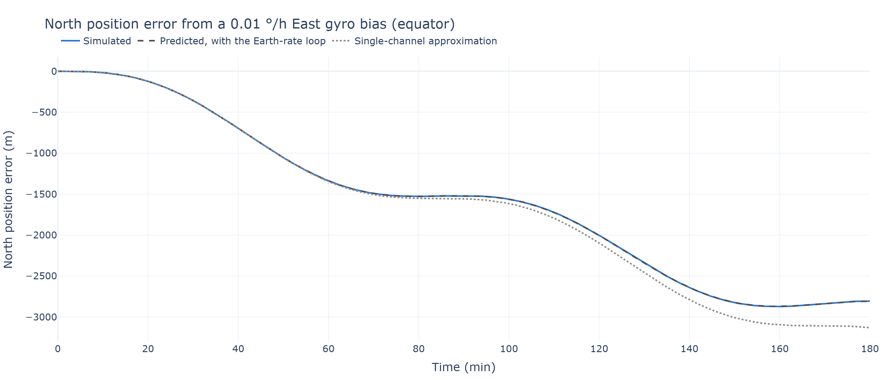

INS error model¶
Why does an INS drift the way it does? Small errors in the sensors and in the initial alignment do not simply add up. Gravity, the Earth's curvature and its rotation feed them back on each other. A tilt makes the navigator misread gravity as a horizontal acceleration; the velocity error that results turns the computed vertical back towards the true one. This feedback gives inertial navigation errors their characteristic shapes: bounded oscillations with an 84-minute period, slow 24-hour and Foucault modulations, steady growth from gyro biases, and an exponential vertical divergence.
This page derives those shapes from a linearized error model. They are what the GUI's error tabs show, and the Validation page checks the simulator against each one.
Key results
- Horizontal errors are governed by the Schuler loop, with a period of 84.4 minutes. Initial tilts, initial velocity errors and accelerometer biases cause bounded oscillations.
- A gyro bias makes the position error grow, by about 0.6 nmi/h for every 0.01 °/h. Over hours the Earth-rate loop bends that growth over.
- An initial heading error acts like an East gyro bias of \(\omega_{ie}\cos L_b\,\delta\psi_D\): the packaged spec's 0.04° matches its 0.01 °/h gyro biases.
- Away from the equator, the Earth's rotation turns the Schuler oscillation between North and East, like a Foucault pendulum.
Physical picture¶
flowchart LR
TILT["Tilt error δψ"] -->|"misresolves gravity:<br/>g·δψ"| ACC["Horizontal<br/>acceleration error"]
ACC -->|"integrate"| VEL["Velocity error δv"]
VEL -->|"integrate"| POS["Position error δr"]
VEL -->|"turns the computed<br/>vertical by δv / R"| TILTA tilted navigator sees part of gravity as a horizontal acceleration, and integrates it into a velocity error. But the navigator also turns its local vertical as it believes it moves over the curved Earth, at the transport rate \(v/R\). The velocity error therefore turns the computed vertical, back towards the true one, until the tilt reverses. The result is an oscillation: a pendulum as long as the Earth's radius, with a period of 84 minutes. Max Schuler showed in 1923 that a pendulum or gyrocompass tuned to this period would not be disturbed by the vehicle's accelerations. Every INS is Schuler-tuned by its navigation equations alone.
Continuous-time model¶
Linearized error equations¶
Write the navigator's equations with every quantity replaced by its estimate, subtract the true equations, and keep only first-order terms in the errors. For a vehicle moving slowly compared with the Earth's rotation, so that transport-rate terms can be dropped, this gives:
where:
- \(\delta\psivec{nb}{n}\), \(\delta\vvec{eb}{n}\) and \(\delta r_N\), \(\delta r_E\) are the attitude, velocity and horizontal position errors, as defined on Notation & conventions [rad, m/s, m];
- \(\delta\wvec{ib}{b}\) and \(\delta\fvec{ib}{b}\) are the gyro and accelerometer errors, measured minus true [rad/s, m/s²];
- \(\delta\wvec{in}{n}\) is the error in the computed rotation rate of the NED frame, caused by the velocity errors and the latitude error \(\delta L_b = \delta r_N/R\) [rad/s];
- \(R\) is the Earth's radius, \(R_N\) or \(R_E\) as appropriate [m].
The vertical channel has its own page: Vertical channel.
At rest or in steady level flight the specific force is the reaction to gravity, \(\Cmat{b}{n}\fvec{ib}{b} \approx (0, 0, -g)\), and the first term of the velocity equation becomes \((-g\,\delta\psi_E,\ g\,\delta\psi_N,\ 0)\): a tilt of one radian misreads one \(g\) of horizontal acceleration.
The Schuler loop¶
Take the North velocity error and the East tilt from the equations above:
The tilt and the velocity error oscillate together at the Schuler frequency
where \(\delta\omega_E\) and \(\delta f_N\) are the gyro and accelerometer errors along East and North [rad/s, m/s²]. Solving for one error source at a time gives the North position error:
| Error source | North position error \(\delta r_N(t)\) | Size |
|---|---|---|
| Initial velocity error \(\delta v_N(0)\) | \(\delta v_N(0)\,\sin(\omega_s t)/\omega_s\) | up to 0.8 km per m/s |
| Initial tilt \(\delta\psi_E(0)\) | \(-R\,\delta\psi_E(0)\,(1 - \cos\omega_s t)\) | up to 62 m per arcsecond |
| North accelerometer bias \(b_a\) | \((b_a/\omega_s^2)\,(1 - \cos\omega_s t)\) | up to 12.7 m per µg |
| East gyro bias \(b_g\) | \(-R\,b_g\,(t - \sin(\omega_s t)/\omega_s)\) | grows at 1.1 km/h per 0.01 °/h |
The East channel behaves the same way, with the signs of the tilt and gyro terms reversed. Only the gyro bias produces an error that grows; every other source is bounded.
Gyro bias¶
A gyro bias keeps rotating the computed attitude. The Schuler loop balances it the only way it can: with a steady velocity error, \(-R\,b_g\) on average, whose transport-rate error cancels the bias. The position error therefore grows at \(R\,b_g\): 0.31 m/s, or 0.6 nmi/h, for a 0.01 °/h gyro bias, with the Schuler oscillation riding on top.
Over hours a second loop bends that growth over. The North position error is a latitude error, so the navigator computes the Earth-rate vector at the wrong latitude. At the equator that error lies along Down and turns into a heading error, and Earth rate acting on a heading error tilts the frame about East. With \(\wvec{ie}{n} = (\omega_{ie}, 0, 0)\) at the equator:
Its modes are the Schuler frequency \(\omega_s\) and the Earth rate \(\omega_{ie}\), one cycle per sidereal day. From an East gyro bias \(b_g\):
which equals the single-channel result while \(\omega_{ie}t\) is small, and is 10% below it after three hours.
Heading error¶
The same coupling makes an initial heading error \(\delta\psi_D\) matter. The navigator subtracts the Earth's rotation from the gyro outputs using its own attitude; with a heading error it subtracts the wrong vector. From the attitude equation, the result is an East tilt rate of \(\omega_{ie}\cos L_b\,\delta\psi_D\): exactly what an East gyro bias of that size would do. At the packaged mission's 18.5° N, the spec's 0.04° heading error acts like a 0.01 °/h gyro bias. That is no coincidence: gyrocompass alignment finds North only to within the gyro bias over \(\omega_{ie}\cos L_b\).
In manoeuvres a heading error does more. When the vehicle accelerates, a heading error misresolves the acceleration, turning every change of velocity \(\Delta v\) into a sideways velocity error \(\delta\psi_D\,\Delta v\). The packaged mission's takeoff to 250 knots, with a 0.04° heading error, leaves 0.09 m/s of cross-track velocity error.
Foucault modulation¶
Away from the equator the Earth's rotation has a vertical component, \(\omega_{ie}\sin L_b\), which couples the North and East channels through both the attitude and the Coriolis terms. The Schuler oscillation then turns slowly between North and East, as a Foucault pendulum's swing does. A full turn takes \(2\pi/(\omega_{ie}\sin L_b)\): 34 hours at 45° N, 75 hours at 18.5° N.
Summary¶
| Behaviour | Period or time constant | Driven by |
|---|---|---|
| Schuler oscillation | 84.4 min | Tilts, velocity errors, accelerometer biases |
| Steady drift | – | Gyro biases, heading errors |
| Earth-rate loop | 23.9 h | Latitude errors, through the computed Earth rate |
| Foucault modulation | \(2\pi/(\omega_{ie}\sin L_b)\) | The vertical component of Earth rate |
| Vertical divergence | 573 s, without aiding | Height errors, through the gravity gradient |
As implemented¶
ins_sim does not integrate these linear equations. Every error it reports comes from running the full nonlinear navigator with erroneous sensor outputs and initial conditions. The closed forms on this page are predictions, which the Validation page tests against the navigator. For example, the gyro-bias prediction:
predicted = (-R_N * b_g * omega_s**2 / (omega_s**2 - WGS84_OMEGA**2)
* (np.sin(WGS84_OMEGA * t) / WGS84_OMEGA - np.sin(omega_s * t) / omega_s))
single_channel = -R_N * b_g * (t - np.sin(omega_s * t) / omega_s)
Compared with Groves (2013)
These are the classical short-term error modes of a local-level INS, as analysed by Groves1 and by Titterton and Weston2. The error equations above are a simplified form of the full error-state model, which keeps the transport-rate terms, the vertical channel and every sensor error as states; ins_sim's covariance analysis uses it.
What it looks like¶

A level IMU at rest at the equator, started with a 20″ tilt and no other error. The East position error swings between zero and 1.3 km and returns to zero every 84.6 minutes, as predicted.

The same IMU with a 0.01 °/h East gyro bias. The error grows at about 0.6 nmi/h, and the Earth-rate loop bends it below the single-channel approximation within hours. The simulation follows the full prediction to within 0.1%: the navigator's rotating-Earth terms produce the coupling without being told about it. Both are checks on the Validation page.
On a real mission the error sources act together and change form in every manoeuvre: see the packaged mission's Monte Carlo results.
Assumptions & limitations¶
Assumptions & limitations
- Small errors. The equations are linear in the errors, which suits a navigation-grade INS over hours. Large errors, such as a heading error of several degrees, need the full nonlinear equations; the simulator always uses those.
- Slow vehicle. The transport-rate terms are dropped. At aircraft speeds they shift the Schuler and Foucault frequencies slightly.
- One error at a time. The closed forms take a single error source on a stationary, level IMU. In flight the sources combine, and manoeuvres couple heading, scale-factor and misalignment errors into the navigation errors in ways these formulas do not capture. That is what the Monte Carlo simulation is for.
- The full model is elsewhere. The Covariance analysis page keeps every term and every error source, and propagates the statistics of the errors along a real flight.
In the code¶
| Prediction | Scenario in tools/validation_scenarios.py |
Test in tests/validation/ |
|---|---|---|
| Schuler oscillation from an initial tilt | schuler_tilt |
test_inertial_errors.py |
| Accelerometer bias | accel_bias |
test_inertial_errors.py |
| Gyro bias, with the Earth-rate loop | gyro_bias |
test_inertial_errors.py |
| Vertical channel | vertical_channel |
test_inertial_errors.py |
This example computes the Schuler period at the equator, then gives the navigator a 10″ initial tilt and checks the peak East error against \(2(R_E + h_b)\,\delta\psi_N\):
"""The Schuler period, and the bounded position error that an initial tilt causes."""
import numpy as np
from scipy.spatial.transform import Rotation
from ins_sim.core.earth_model import earth_rate_n, normal_gravity, wgs84_radii
from ins_sim.evaluation.errors import position_error
from ins_sim.navigation.strapdown import NavState, strapdown_navgrade
L_b, h_b, tau_i = 0.0, 0.0, 1.0 # the equator: no Foucault coupling
R_N, R_E = wgs84_radii(L_b)
g = normal_gravity(L_b, h_b)
omega_s = np.sqrt(g / (R_E + h_b)) # East channel: radius R_E
T_s = 2.0 * np.pi / omega_s
print(f"Schuler period T_s = {T_s / 60:.2f} min")
# A level IMU at rest, perfect sensors and an ideal barometer, but the
# navigator starts with a 10 arcsecond tilt about North.
tilt = np.deg2rad(10.0 / 3600.0)
M = int(round(T_s / tau_i)) + 1 # one Schuler period
start = NavState(L_b, 0.0, h_b, np.zeros(3), Rotation.from_rotvec([tilt, 0.0, 0.0]).as_quat())
nav = strapdown_navgrade(np.tile(earth_rate_n(L_b), (M, 1)),
np.tile([0.0, 0.0, -g], (M, 1)), start, tau_i,
meas_h_b=np.zeros(M))
delta_r_E = position_error(nav.L_b, nav.lambda_b, nav.h_b, L_b, 0.0, h_b)[:, 1]
print(f"Largest East error: {delta_r_E.max():.1f} m, "
f"predicted 2 (R_E + h_b) tilt = {2.0 * (R_E + h_b) * tilt:.1f} m")
print(f"East error after one period: {abs(delta_r_E[-1]):.1f} m")
Schuler period T_s = 84.57 min
Largest East error: 619.0 m, predicted 2 (R_E + h_b) tilt = 618.4 m
East error after one period: 1.0 m
References¶
-
Groves (2013), Chapter 5 for the propagation of INS errors, and Chapter 14 for the full INS error-state model. ↩